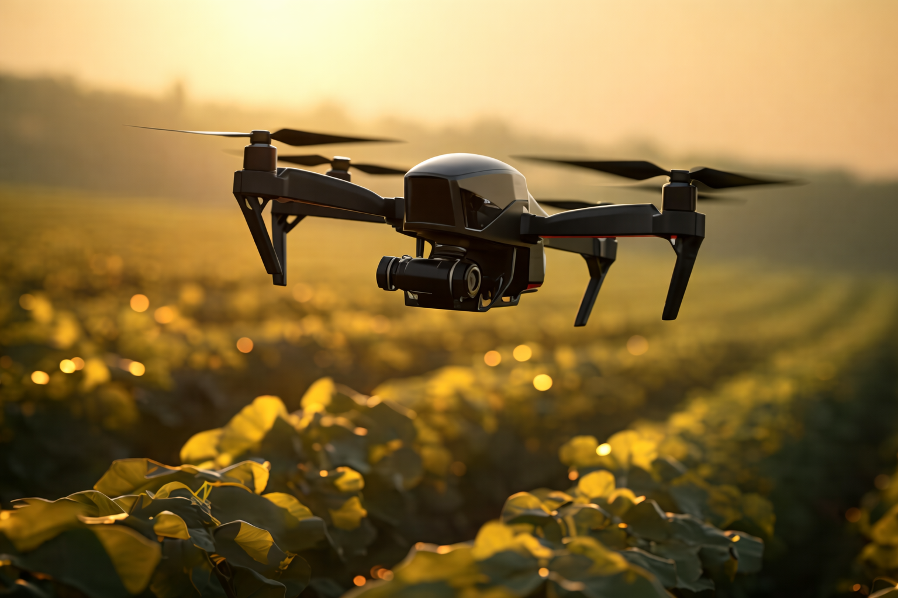

L'Aéronef Intelligent pour
l'Agriculture de Précision
Green Wings est un drone eVTOL autonome propulsé par l'IA. Il optimise sa trajectoire et son énergie en temps réel pour surveiller vos cultures et intervenir là où vous en avez le plus besoin.

Révolutionnez vos cultures
Conçu par une équipe d'ingénieurs passionnés, Green Wings combine capteurs de pointe et intelligence artificielle pour répondre à trois enjeux majeurs.
Suivi de Croissance
Déploiement de capteurs embarqués (LiDAR TF-Luna, Caméra v3) pour surveiller en haute précision le développement de vos plants jour après jour.
Arrosage Intelligent
Optimisation du vol pour intervenir de manière ciblée, distribuant l'eau ou les nutriments exactement là où la plante en a besoin.
Détection de Sécheresse
L'intelligence prédictive analyse les données pour repérer très tôt les zones de stress hydrique avant que les dégâts ne soient irréversibles.
Technologie & Innovation
Inspiré du système de prédiction énergétique Adaptron.
Trajectoire Optimisée (6DOF)
Simulé sous MATLAB, le drone calcule sa trajectoire en temps réel via un Raspberry Pi 5 pour s'adapter à la météo et la topographie de l'exploitation.
Gestion de l'Énergie par IA
Les algorithmes basés sur Random Forest prédisent et minimisent la consommation des 4 moteurs brushless, garantissant un vol prolongé et une couverture maximale.
Dashboard de Contrôle
Contrôlez vos missions depuis notre station au sol basée sur Flask. Visualisez la télémétrie en temps réel et prenez des décisions éclairées.